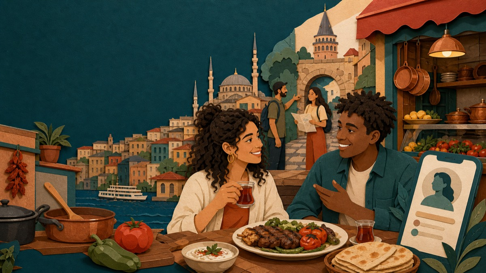

Yeni İstanbul A2 · Ünite 01
Gezelim Görelim
آشپزی، سفارش غذا و معرفی ویژگیهای آدمها
۰ از ۵ بخش
مسیر واحد ۱

Yeni İstanbul A2 · Ünite 01
آشپزی، سفارش غذا و معرفی ویژگیهای آدمها
مسیر واحد ۱
Ünite 01
Yeni İstanbul A2 · برنامهٔ مستقل واحد ۱
منبع انتخاب: همهٔ صفحات واحد ۱ در دو ویرایش ارسالی کتاب İstanbul A2.